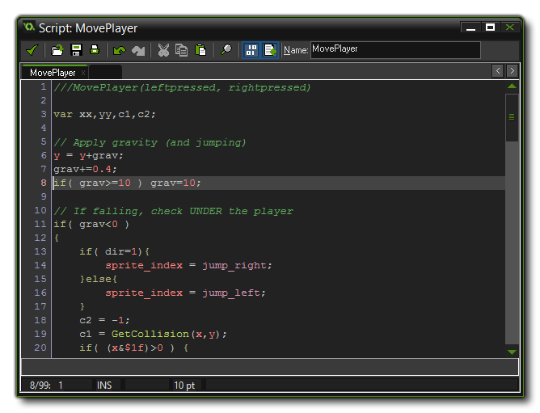
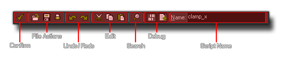
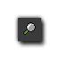
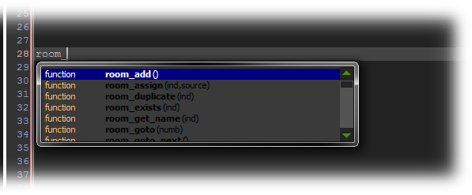
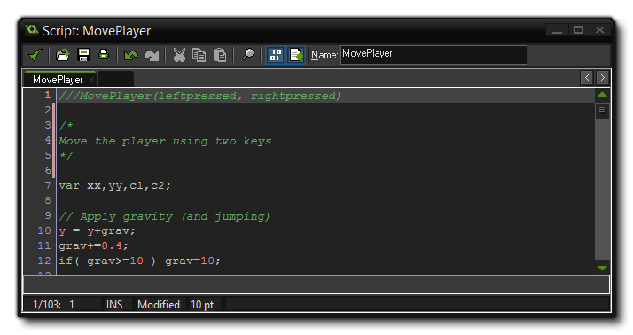
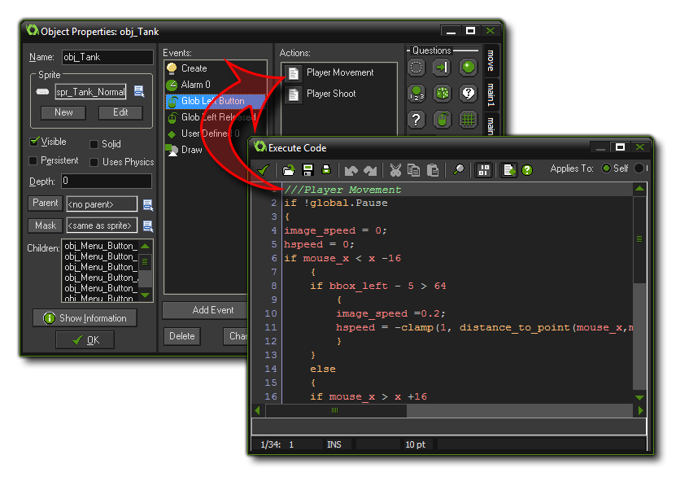
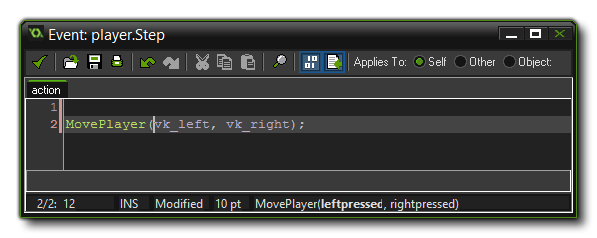
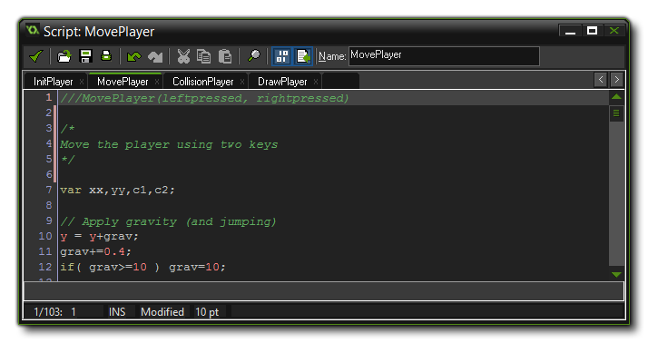
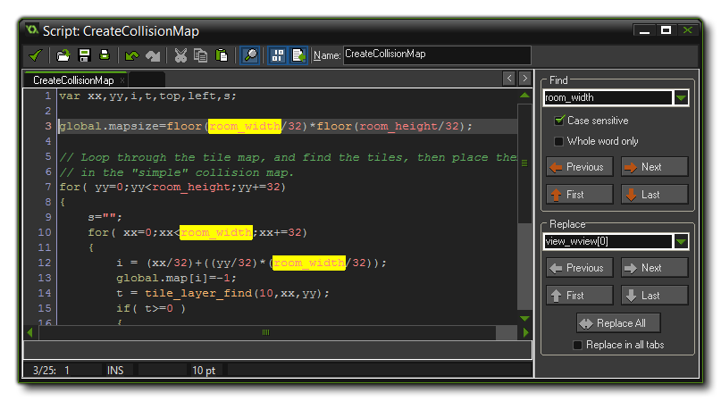
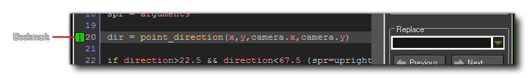

Scripts
Scripts are the way in which GameMaker:
Studio permits you to design your own functions.
You can use code in a number of places within GameMaker:
Studio, from objects, to rooms and instances, and there are a
number of built in functions that make your life easier when
programming, however it is often necessary for you to create your
own functions to do a specific task, or to condense a large
section of code into a more manageable chunk, or even to be able to
re-use a particular code block in many different places. That is
why GameMaker: Studio gives you the ability to create
scripts.
What Is A Script?
Scripts are written using GML (the Game
Maker Language, covered in the Reference section), which is the
built-in programming language that GameMaker: Studio uses.
Once you become more familiar with GameMaker: Studio and
want to use it to its fullest extent, it is advisable to start
learning to use this language, as it greatly expands your
possibilities when creating games.
A script (like any built-in function) can take different input
variables, with real, string, boolean and special values like
all or noone being accepted, and these input
variables are generally called arguments, although they are
also referred to as parameters. To execute a script from an
object or a time line you can use the Execute
Script action , but you can also call it in a code box using
the actual script name as if it were a function or even by using
the GML function script_execute.
If you use the script action you can specify the script you want to
execute, together with the up to five arguments, but if you are
using the code editor to call a script, you can pass up to sixteen
arguments.
Using Scripts
As mentioned above, you can pass a number of arguments to a
script, and it will use these to perform the task you have written
it for. To understand this better, take, for example, an action (or
a code in GML) and think about how it works... you place it in an
event and specify a number of parameters and it will make your
instance do something. Scripts are exactly the same, with the only
difference being that you write them! Not only can you pass
arguments into a script, but you can also ask a script to
return a value too (using the return keyword), so
you can use them to build calculating methods (mathematical
methods) or give back an instance id after a complex collision
detection or any number of things. Please note, however, that using
return effectively ends the script, and so no code
after it has been used will be executed, and this means that a
certain amount of thought has to go into how your scripts are
structured.
Saving and Loading Scripts
You can save and load scripts from *.txt files into
GameMaker: Studio and in this way you can create collections
of scripts and store them for use in multiple projects. To load a
script (or a collection of scripts) into GameMaker: Studio,
simply right-click on the scripts resource folder (or any
sub-folder that you have created in that section) and select Add
Existing Script. This will open the file browser and you can
select either a script *.gmx, or a *.txt file. They will
then be loaded in to GameMaker: Studio.
For saving scripts it's a similar process, where you right-click on
a script (or a script folder) and select Export Selected
Script. This will open up a window asking you where to export
to, and when you click on "Okay", the script will be saved as a
*.txt file, with the name of the file being the same as the name of
the script. If you have selected multiple scripts in a folder, they
will all be saved, each with the name of the script they correspond
to.
Creating A Script
To create a script in your game, choose Create Script
from the Resources menu, or right click on the scripts
resource in the resource tree and select Create Script, or
just click the create script button on the toolbar at the top of
the main GameMaker: Studio screen. Whatever method you
choose will open the following window:  Note: The script editor
window and the code editor window for objects have exactly the same
functionality. The only difference between them is that the script
editor has a name box whereas the code editor has the choice
of which instance is to run the code (self, other or object), just
like the D'n'D actions.
The Script Editor
When you open the script editor, you should first give your new
script a name. This should be something sensible and easy to
remember and recognise, and must not start with a number or
have any symbols (except the under-bar "_" symbol). The name you
give the script is the one you will use later as a function in
code. It is also a good idea to write some comments at the start of
the script (see the above image) to outline the script arguments
and how it should be used, especially if you are going to work as
part of a team, or plan on using many scripts in your game.
Once you have done that you can start to write your script using
standard GML functions and variables, using the many options along
the Toolbar at the top to help you in this process. Here is a brief
explanation of what each of the toolbar buttons does: 
Confirm
This will close the script editor and save any changes you have
made. Be aware that there are no confirmation messages asking if
you want to save.
Load A Script From A File
This will open the standard window for loading a script that has
previously been saved as a text file. This will replace the
existing script with the loaded one.
Save Script
This will save your current script as a *.txt file, ready to be
used in another game.
Print Script
This will open a standard windows dialogue where you can select a
printer and print out your current script on paper.
Undo
This will undo the last action, and you can repeatedly undo
consecutive actions with this button, but note that the number of
undos that can be performed is limited to 16.
Redo
If you have used the undo function, you can use this to go back to
the state that you undid. This is limited to the number of undos
that you have done previously.
Cut
You can use this to "cut" a section of your code out of the script.
This code is stored to the clipboard and can then be pasted into
another part of the same script, another script resource or even
into some other program, independent of GameMaker:
Studio.
Copy
This button will copy the currently selected code into the
clipboard for use in another place, either the same script, another
script or even an alternate program.
Paste
You can use this button to paste whatever text you have previously
stored in the clipboard (with cut, or copy) into the current
script.

Search And Replace
Clicking this button will open the search/find and replace tab in
the script editor. See below for more details.
Check Syntax
This button will toggle on and off the syntax checker of the script
editor. When on, any errors in the code syntax will be highlighted
in red (default) and a message will be displayed at the bottom of
the editor explaining briefly what the problem is. Note that not
all aspects can be tested at this stage but the syntax of your
script will be tested, together with the existence of functions
used.
Auto Complete
When this is switched on, if you pause when typing something an
auto-complete window will pop up and you can then use the cursor
keys or mouse to navigate to the function that you are looking for.
The image below illustrates this:

Keyboard Shortcuts
There are a number of keyboard shortcuts to help you navigate
around the script editor, and each one is designed to help you get
the most from this powerful tool:
- By pressing f2 you get the code snippet pop-up,
which permits you to select one of the commonly used code methods.
You can define your own code snippets if you want to, saving them
to the Local App Data directory (ie:
C:\Users\MyUserName\AppData\Local\GameMaker-Studio) for
future use using the name "snippets.txt". If there are no
snippets defined then GameMaker: Studio will copy the defaults from
the Roaming directory (ie:
C:\Users\MyUserName\AppData\Roaming\GameMaker-Studio). You
can edit this file with any text editor, and each snippet is on a
separate line (there should be no blank lines). It starts with the
name of the snippet (which is what is shown in the menu) followed
by the colon (:) followed by the actual snippet of code. Use # for
a newline and put the text that needs to be selected first between
| symbols. See the examples that are already in the file in the
Roaming directory to see how it is set up, and it is strongly
recommended that you make a backup of it before you start changing
anything, although the base file will be re-installed when you
update GameMaker: Studio (but the Local App Data version will
remain).
- You can use f7 and f8 to change the size of the
font within the editor.
- If you press f10 you can toggle on or off the colour
coding for your code.
- Press <CTRL> + F to call up the search, find
and replace options (see below).
- If you are using multiple scripts, then you can press
f12 (or click the Middle Mouse Button) when the mouse is
over any of the other script names to have it opened in a new
window, ready for editing. If no script is selected, then the
manual will be opened.
- You can press <Shift> + f12 (or
<Shift> and the Middle Mouse Button) when the mouse is
over any selected text to have it open the
Search In Scripts window, already populated with the selected
text. You can also do this on a function (without selecting it) and
the function will be used to populate the search feild of the
window.
- You can use <Ctrl> + Z for undo and
<Ctrl> + <Shift> + Z for redo.
- The arrow keys move you around in the text, and you can
use <Ctrl> with the left and right arrow key to move
to the beginning of the previous or next word. If you use
<Ctrl> with the up and down arrows you also scroll the
text.
- You can hold the <Shift> key and move with the
arrow keys to select text.
- The <Home> key moves the cursor to the beginning
of the line and the <End> key to the end of the line,
and if you also hold <Ctrl> they move to the start and
end of the script. Holding the <Shift> key you can
select the text too.
- Use <TAB> to indent selected lines and
<Shift> + <TAB> to unindent selected
lines.
- Hold <Ctrl> with the <Backspace> or
<Delete> key to delete until the beginning of the
previous or next word.
- You can force the auto-complete window to appear if you have it
switched off in the Scripts Preferences by
pressing <Ctrl> + <Space>, and you can cancel it
at anytime by pressing <ESC>.
- You can drag a selection with the mouse. (Use
<Ctrl> to copy it.) The new location is immediately
shown.
- You can scroll through the text with the mouse wheel and with
<Ctrl> pressed the cursor scrolls with the text. As
with previous shortcuts, holding the <Shift> key
selects text.
Adding Comments and Naming Code Blocks
Commenting your code is very important for maintaining
productivity as it keeps things clear and separates sections of
code in such a way that it is obvious what each part does and why
it is there. It also means that if you are working in a team then
you can leave notes for other members and that they will know
exactly what you have done or what a specific section of code is
for. Even if you are a solo developer, leaving comments for your
code is important, especially if you have to leave the project and
come back to it at a later date.
Commenting your code is simple, as you just have to use
"//" before any line of text or you can comment out whole
paragraphs by using "/* text here */". The following image
illustrates a script using both these methods:  If you are in the
code editor, then you can also give your code box a title by
making a comment for the first line using the following format:
///Your Comment Here!
This comment will then be used for the "name" of that codebox (this
works for codeboxes added to Timelines too) as illustrated by the
following image:  If you use make a comment in this
way in the script editor, then the comment text will be used
as the auto-complete text in the code editor when you type the
script. So, in the example script image above above we have the
script "MovePlayer", and it starts with a "///" comment, which
would then show in the code editor like this: 
Script Tabs
When creating larger games, you will often require many, many
scripts and this can cause a certain amount of "clutter" in the
resource tree, and it can be hard to keep track or organise the
scripts in a coherent fashion. To help with this, the Script
Editor has child scripts available to you in the form of tabs.
So, say you have a player object with a create script, a movement
script, a collision script and a draw script. Instead of placing
them all in the resource tree, you would have a parent
script, with its name being the one shown in the resource tree, and
various child scripts. These child scripts are no different
to any other scripts in your game, and will work as they should.
However they will not appear in the resource tree, and to
access them you must first open the parent script.  To create a new
child script you simply click on the empty tab that is always to
the right of the current tab (if you can't see this, then try
scrolling the rest of the tabs using the arrows in the top right
corner). This will create the new script which you should name, and
it will be stored within the parent script when you close and save
the script editor. You can also delete these scripts easily by
clicking on the "cross" icon that you can see on all the script
tabs.
Colour Coding
As you might have noticed, parts of the script text are
coloured. The script editor "knows" about existing objects,
built-in variables and functions, etc. and colour codes them
accordingly. colour-coding helps a lot in avoiding mistakes, in
particular, you see immediately if you have misspelled some name or
use a keyword as a variable, or have a syntax error. However, if
you don't like the colour coding, in the Preferences you
can switch it on and off (you can also use F10) as well as
customise the colours that are used.
Search, Find And Replace
When working with code, it is common that you will want to find
some piece you have written in a large section and then replace it
something different, or simply see at a glance where a line of code
lies within the function. To this end, the GameMaker: Studio
script editor has a search, find and replace function that can be
accessed by pressing the Search button in the toolbar. This will
open up a panel on the right of the code window which looks as
follows:  You
can type the find string at the top (note that in the code all
occurrences of the find string are immediately shown with a yellow
background), and you can indicate whether the search must be case
sensitive, which is normally what you want as variable and function
names in GML are also case sensitive, and whether you want to only
search for whole words. Note that the editor remembers your most
recent searches, and you can click on the drop down button to call
them up and re-select them. With the buttons underneath the search
string input you can now move to the previous, next, first, and
last occurrence of the find string, and this string will be
selected in the text so that you can edit it.
You can also use this panel to replace anything that you have
previously searched for by simply typing in the new code that is to
be used and pressing one of the buttons that are highlighted
underneath. Now you can use the buttons to replace the previously
selected, the next one to be selected, the first, the last or all
occurrences of the code searched for. Note that since your scripts
can be spread over multiple tabs in the same category, you are also
provided with a Replace in all tabs option which, when
checked, will use the search and replace terms to parse all the
scripts in all tabs for that category, rather only the one
currently selected.
Bookmarks
The script editor permits you to bookmark a script so that you
can open it directly from the IDE using a key combination rather
than having to click through multiple windows and icons. This is a
very handy way to track script changes while testing your game, and
is activated simply by moving the cursor to the line of the script
you want to bookmark and the holding <Shift> +
<Control> + <NUM>, where <NUM> is a
number from 1 to 9 on the keyboard. The script editor will now show
your bookmark beside the code in the editor.  To open the bookmarked script
again at any time, you should use the keyboard combination
<Control> + <NUM>, where <NUM> is
the number key of the bookmark.
© Copyright YoYo Games Ltd. 2018 All Rights Reserved